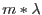

| Parameter | Mand | Type | Default | Constraints |
| mergedset | yes | e | | |
Input/output data set containing RGS raw events
|
| srclist | yes | e | rgssources.ds | |
Input data set containing RGS source list
|
| nbetabins | no | i | 3000 |  |
number of beta bins.
|
| betabinning | no | s | Range | Range binSize binSize |
Specify channels either as range and number of channels, or as first
channel, channel-width and number of channels
|
| betamin | no | r | 3.e-2 | |
lower boundary of first beta bin (rad); used when betabinning='Range'
|
| betamax | no | r | 8.e-2 | |
upper boudary of last beta bin (rad); used when betabinning='Range'
|
| betabinref | no | r | 3.577e-2 | |
midpoint of the bin for which
(rad); used when
betabinning='binSize'
|
| betabinwidth | no | r | 4e-6 | |
width of BETA_CHANNEL bin (rad); used when betabinning='binSize'
|
| nxdispbins | no | integer | 100 | |
number of cross-dispersion bins.
|
| lambdabinref | no | r | 4.005 | |
midpoint of bin for which LAMBDACHA is one [Angstrom]
|
| lambdabinwidth | no | r | 0.010 | |
width of lambda bin [Angstroms]
|
| nlambdabins | no | i | 3600 | |
number of lambda bins.
|
| xdispbinning | no | s | Range | RangebinSize |
Specify channels either as range and number of channels, or as first
channel, channel-width and number of channels
|
| xdispmin | no | r | -1.e-3 | |
lower boundary of first cross-dispersion bin (rad); used when
xdispbinning='Range'
|
| xdispmax | no | r | +1.e-3 | |
upper boundary of last cross-dispersion bin (rad); used when
xdispbinning='Range'
|
| xdispbinref | no | r | -7.92e-4 | |
midpoint of the bin for which
(rad); used when
xdispbinning='binSize'
|
| xdispbinwidth | no | r | 3.6e-6 | |
width of XDSP_CHANNEL bin (rad); used when xdispbinning='binSize'
|
| withpointingcolumn | no | b | Yes | |
Produce columns SC_POINTING_* with Spacecraft Pointing RA DEC POS
|
| withmlambdacolumn | no | b | Yes | |
Produce column with  based on geometry and given
source position. (Å)
|
| withheliocentriccorr | no | b | No | |
Corrects column from heliocentric velocity
|
| withsunanglecorr | no | b | No | |
Corrects column from Sun angle correction
|
| Parameter | Mand | Type | Default | Constraints |